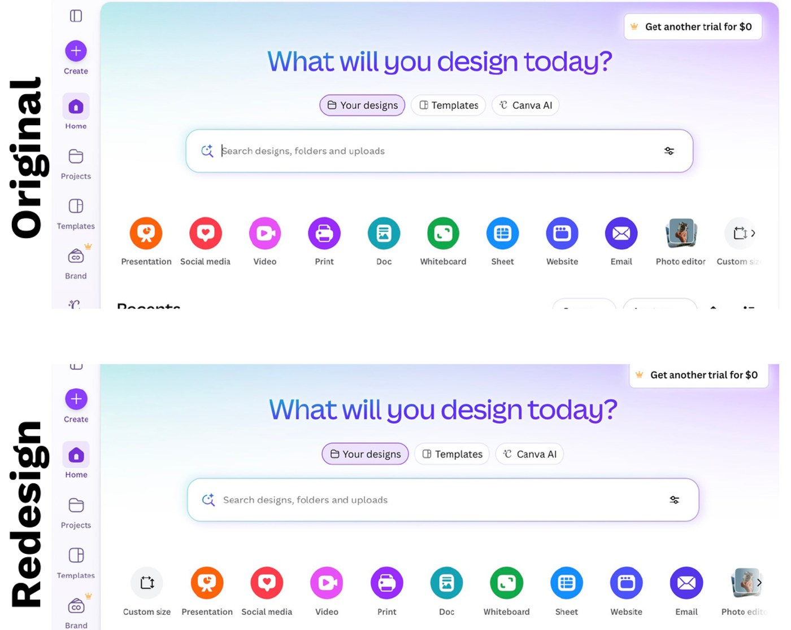

Case study / Course project, Spring 2026
Where new users get stuck in Canva
I wrote the test script, ran a session, and wrote up the findings for a four-person usability study of Canva. Then I mocked up a homepage change to fix its most-missed feature.
- Role
- Wrote the test script and the findings, ran one session, consolidated the data, and made the redesign mockup
- Team
- A team of four. Each teammate ran one session and assigned severity labels.
- Timeline
- Spring 2026; sessions Feb 17 to 24
- Methods
- Remote usability test, surveys, observation notes, synthesis

NoteAn unaffiliated class project. Canva screenshots are used for study and are not endorsed by Canva.
The study
We wanted to know how easily people with limited Canva experience could do both basic and advanced design tasks on the desktop site. Four volunteers, ages 21 to 29, took part; three didn’t use Canva regularly.
Each session ran on Zoom and was recorded. Participants gave consent, filled in a short survey, explored Canva freely while thinking aloud, then worked through 10 timed tasks, and finished with a post-test questionnaire. I wrote all 10 tasks, from opening a template and downloading a design to making a 32 by 64 inch poster, building a feedback form, and adding video with a fade-out.
What we found
Easy for everyone: opening a template, downloading a design, and sharing it with edit access. One participant did the sharing task in under 25 seconds.
Hard:
- Custom size. Three of four couldn’t create a 32 by 64 inch poster.
- Feedback form. None of the four could create one, even using search.
- Video and audio. All four struggled, either taking a long time or not finishing. As one put it: “The music stuff… trying to fade in and fade out… was annoying and hard to figure out.”
Our class report sorted findings into four categories: positive, minor, major, and catastrophic, with a task in each. We placed custom sizing in the most serious one because it’s a common task, and projects headed to print need exact dimensions.
My recommendation: put Custom size first
Custom size sat at the far end of the template row on the homepage, partly cut off, so people didn’t see it. I recommended moving it to the start of the row and mocked up the change. The mockup above shows the original on top and my redesign below.
I also wrote two other recommendations: offer simpler, less pre-filled templates, since one participant said, “It would be nice to have individual features,” and make the video and audio tools easier to spot in the sidebar. For the template point I cited research on choice overload (Iyengar and Lepper, 2000).
Limits
- Four participants, all comfortable with technology, so this shows where people stumbled and not how often.
- Sessions weren’t run identically by all group members, and timing wasn’t recorded the same way in every session. We relied on whether tasks were completed more than how long they took when synthesizing our data.
Reflection
This was my first usability test. The biggest lesson was that tasks that make sense to our team can confuse a participant: you design for them, not for yourself. Ninety seconds was also too short for some tasks. Next time I’d spend more time writing and piloting the tasks.
My strength on this project was organizing the team. I broke the work into steps and assigned them, which kept the sessions on schedule.